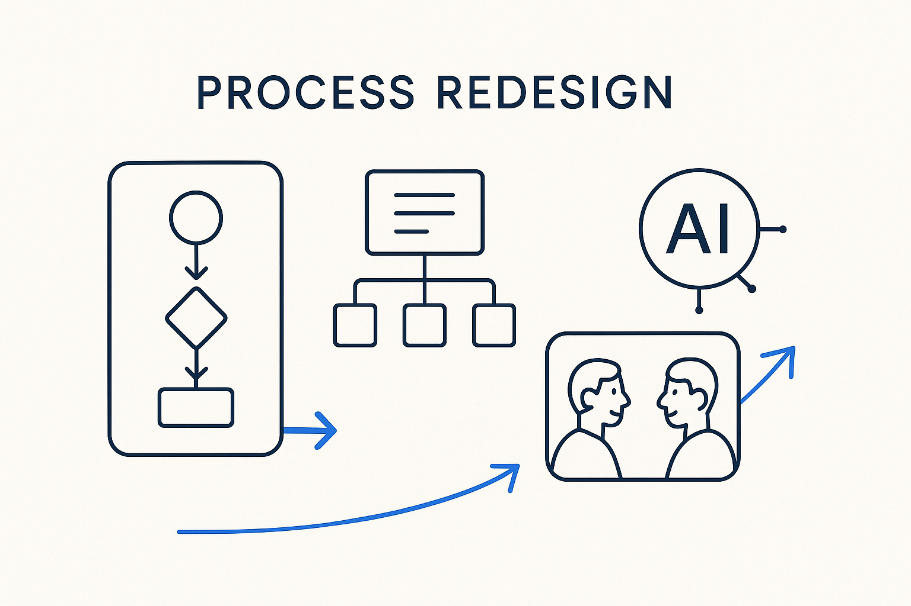

Don't just automate the old process — redesign it. With structure and AI, the way we model, meet and deliver can be rebuilt, not merely digitized.

> Don't just automate the old process — redesign it. With structure and AI, the way we model, meet and deliver can be rebuilt, not merely digitized.
The classic mistake with any new technology is to pave the cow path: take the old, broken process and automate it, so now it fails faster. Process redesign refuses that. When structure and AI change what is possible, the honest move is to step back and redesign the process itself — how we gather requirements, how we model, how we meet, how data is delivered and checked — not to bolt automation onto a workflow that was shaped by the limits of the old tools.
The parallel processes that make modeling hard — migrations, mergers, changing sources, volatile teams — are exactly where redesign pays off. Many of them exist in their current painful form because that was the only way to do it before. Prepared meetings instead of status theatre, shift-left checks instead of end-of-line acceptance, systems talking in metadata instead of humans relaying news — each is a redesigned process, not a digitized old one.
Process redesign is challenging turned on the way we work: question the workflow, keep what genuinely serves the outcome, and rebuild the rest around what structure and AI now make possible. Automating a bad process is a cost; redesigning it is where the real gain is. Model the process, then have the nerve to redesign it.
Where it lives: the signature principle of Breakthrough Modeling — rebuild the process, don’t just digitize it.